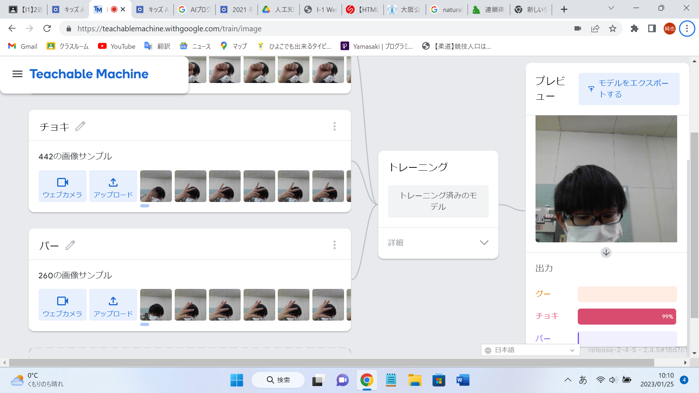

第2週目
2-1 １週目のレポートをHTMLで作る
１週目のレポート
1.内容
1週目のレポートをHTMLで作成した。
2.感想
簡単にホームページを作れて驚いた。もう既に形式ができていたからすぐに出来ただけで本当は時間がかかるのかなと思った。
2-2 機械学習体験

1.内容
AIについて学び、Teacheable Machineを使って機械学習を体験した。
AIにグー、チョキ、パーの三つの画像を学習させ、今どのポーズをしているのか判別できるようにした。
2.感想
AIを以外と簡単に使えて驚いた。たくさんのデータないとポーズを判別するのは難しいと思った。
2-3 VR（バーチャルリアリティー：Virtual Reality）会議室の体験
1.内容
VRゴーグルとVRコントローラーを用いてVR会議室の体験をした。コントローラーを用いてホワイトボードに書き込んだ。
2.感想
初めてVRを体験したので操作がなれなくて酔って気持ち悪かった。